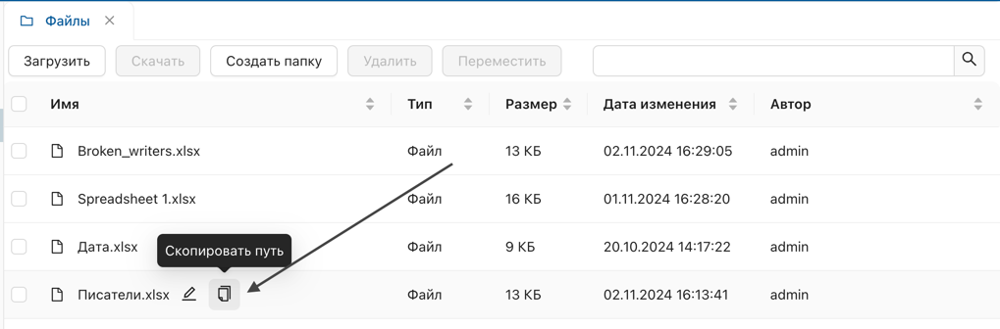
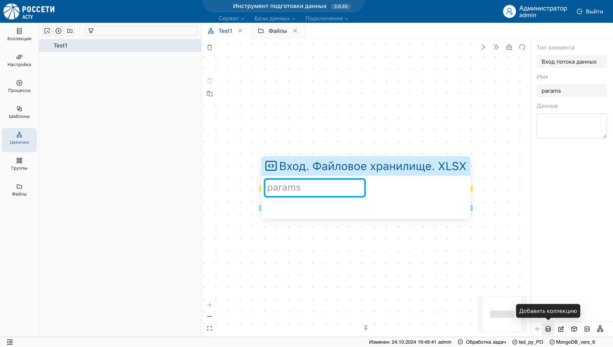

Ниже описан пример настройки цепочки преобразований, включающих объекты "Программный обработчик" и "Коллекция".
Загрузка файла в s3
- В разделе "Файлы" загрузите файл формата XSLX.

Инициализация обработчика
- В разделе "Цепочки" настройте обработчик.

- Выберите обрабочик из списка.
В результате, выбранный объект отобразится в рабочей области в виде блока с синим заголовком
- Скопируйте путь к файлу в разделе “Файлы”.

- Задайте параметры в поле params:
{
"file_path": "путь_к_тестовому_файлу.xlsx"
}
- Подключите выходную коллекцию к обработчику.

- Запустите обработчик.

Результат: В рабочей области должен отобразиться статус успешного запуска процесса, а в списке коллекций объект с данными из хранилища.

- Проверьте, что данные из
XLSXфайла корректно добавлены в раздел "Коллекции".
Отладка скрипта
В случае, если запуск обработчика возвращает ошибку, отладьте скрипт вручную.
- Нажмите на заголовок блока.

Результат: слева отобразится панель настройки обработчика.
- Вызовите функцию скрипта для отладки.

- Скопируйте текст и отладьте его в среде разработки.